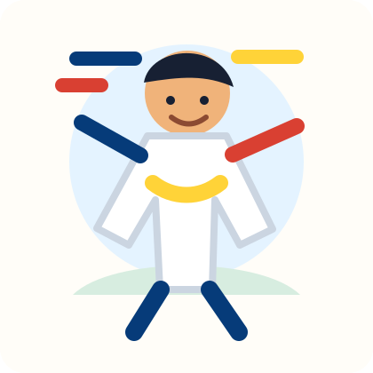

Karate Nedir?
Karate; disiplin, saygı, denge ve doğru tekniklerle yapılan bir savunma sporudur. Antrenmanda duruş, yumruk, tekme, blok ve kata çalışılır.
Sarı kuşağa giden güçlü başlangıç
8 yaşında karateci
Karateye gidiyorum, sarı kuşağa geçmeye hazırlanıyorum ve Fenerbahçeliyim. Bu sitede karateyi, kuşakları ve antrenmanda öğrendiğim güçlü hareketleri anlatıyorum.

Giriş antrenmanı
Fareyle ya da parmağınla kum torbasını sürükleyebilirsin. Üzerine tıklayınca yumruk puanın artar ve torba sallanır.
Karate; disiplin, saygı, denge ve doğru tekniklerle yapılan bir savunma sporudur. Antrenmanda duruş, yumruk, tekme, blok ve kata çalışılır.
Selam vermek, hocayı dinlemek, arkadaşlara dikkat etmek ve çalışırken kontrollü olmak karate derslerinin en önemli parçalarındandır.
Önce sarı kuşak, sonra daha çok çalışarak turuncu, yeşil, mavi, kahverengi ve bir gün siyah kuşak!
Karate kuşakları
Her kuşak yeni teknikler öğrenmek, daha iyi odaklanmak ve saygılı bir sporcu olmak için bir basamaktır.
Başlangıç. Temel duruşlar ve selam öğrenilir.
Kaan'ın sıradaki hedefi. İlk güçlü teknikler başlar.
Daha hızlı kombinasyonlar ve denge çalışılır.
Teknikler daha temiz ve kontrollü yapılır.
Güç, hız ve dikkat birlikte gelişir.
Siyah kuşağa hazırlık dönemidir.
Büyük hedef. Disiplin ve uzun çalışma ister.
Siyah kuşak parkuru
Zıpla, yıldızları topla ve bitiş çizgisine ulaş. Klavyede boşluk veya yukarı ok ile zıpla; telefonda oyun alanına dokun.